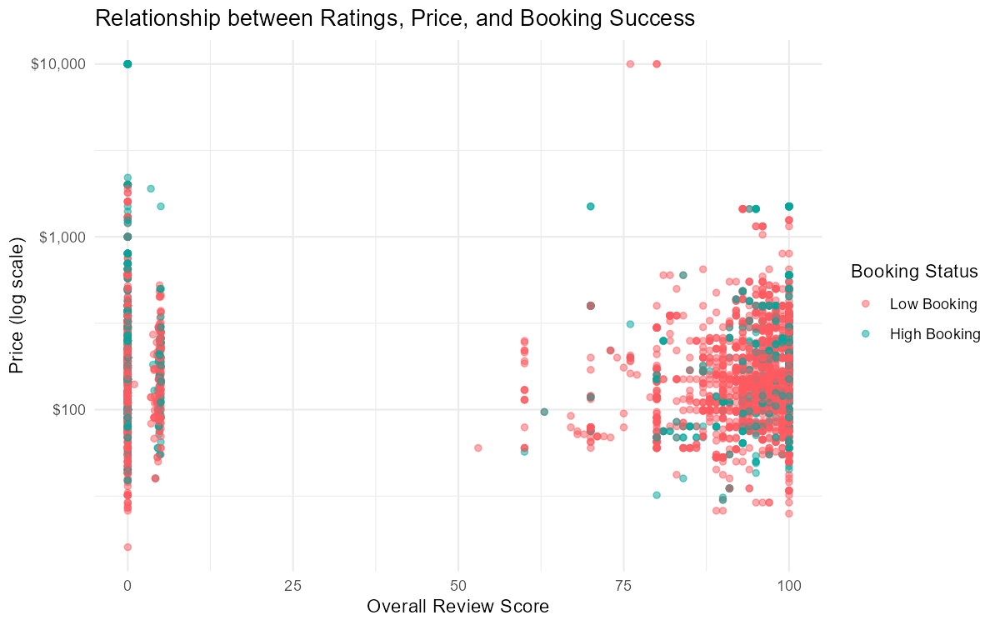
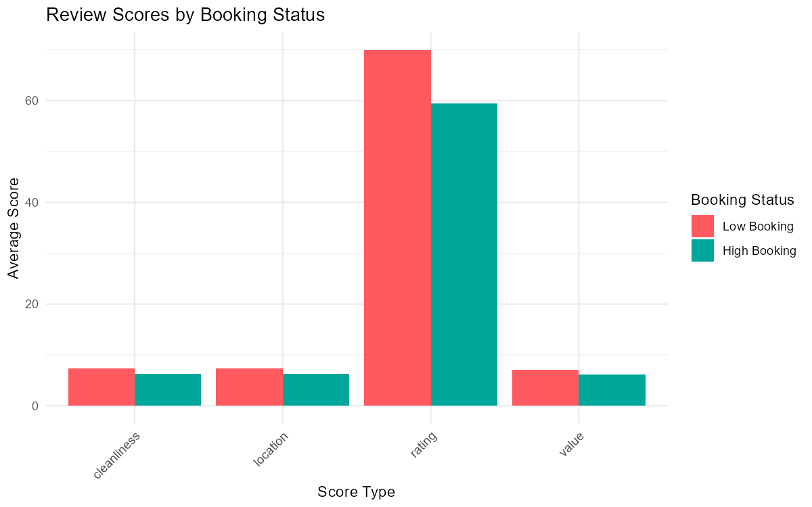
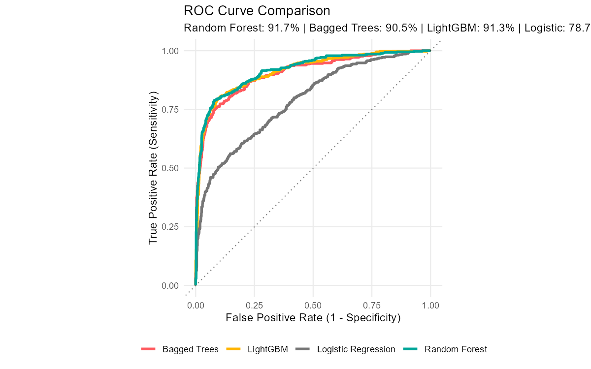

Built supervised ML models to predict which San Francisco Airbnb listings achieve high booking rates, using a dataset of 12,947 listings with 32 features. A Random Forest model achieved 91.7% ROC-AUC, outperforming Logistic Regression (78.7%), Bagged Trees (90.5%), and LightGBM (91.3%). Beyond model performance, the analysis surfaced actionable pricing insights, high-booking hosts offer ~14.3% weekly discounts versus 5% industry average, and each additional bedroom increases booking odds by roughly 65%.
per additional bedroom
Inside Airbnb dataset
logistic baseline
The San Francisco short-term rental market is highly competitive. Hosts with similar properties can see wildly different booking rates depending on pricing strategy, amenity offerings, review quality, and host behavior. Understanding what drives high booking rates matters for hosts optimizing pricing, platform teams deciding which listing attributes to surface, and investors evaluating properties before purchase.
The core modeling problem is binary classification: given a listing's features, will it achieve a high booking rate? This framing turns qualitative host intuitions into a data-driven, explainable framework. Binary classification was chosen over regression because the actionable question for a host is binary, am I in the high-booking tier or not?
Four models were compared ranging from a linear baseline to gradient boosting to confirm that performance gaps were real and not an artifact of a single algorithm class. The key constraint was the target variable itself: actual booking data isn't public, so review count was used as a proxy for occupancy, a limitation acknowledged explicitly rather than buried.
Inside Airbnb (12,947 listings · 32 raw features)
│
▼
┌─────────────────────────────────────┐
│ Preprocessing │
│ log-transform price (long tail) │
│ binary encode: superhost, room type│
│ median impute: missing review scores│
│ near-zero variance filter │
└──────────────┬──────────────────────┘
│
▼
Binary Target Construction
high_booking = review_count > p60
│
┌────────┴─────────┐
│ Stratified 5-Fold CV │
└────────┬─────────┘
│
┌────────────┼────────────┐
▼ ▼ ▼
Log. Reg. Bagged Trees Random Forest LightGBM
78.7% AUC 90.5% AUC 91.7% AUC ✓ 91.3% AUC
│
▼
Feature Importance
Business Insight TranslationThe dataset comes from Inside Airbnb, containing 12,947 San Francisco listings across four feature categories. Each listing is observed at a point in time, no time-series structure. The target variable was defined as a binary high-booking indicator based on review count as a proxy for occupancy, thresholded at the 60th percentile.
Room type (entire home, private room, shared), bedroom & bathroom count, neighborhood and location, amenities count
Nightly price (log-normalized), weekly & monthly discount %, minimum/maximum nights, availability over 30/60/90/365 days
Superhost status (binary), response rate & acceptance rate, listings count, host tenure in years on platform
Overall rating, cleanliness, communication, value sub-scores, number of reviews, and reviews per month
ROC-AUC · Stratified 5-fold cross-validation · Metric: area under receiver operating characteristic curve
| Model | ROC-AUC | Notes |
|---|---|---|
| Random Forest ✓ Best | 91.7% | Strong feature interactions, natural feature importance, robust to correlated features |
| LightGBM | 91.3% | Gradient boosting; fast but similar performance to RF at this scale |
| Bagged Trees | 90.5% | Close second; Random Forest's feature sampling gives the edge |
| Logistic Regression | 78.7% | Baseline; fails to capture non-linear interactions (pricing × bedrooms × location) |
A high AUC is only useful if the findings tell stakeholders what to do differently. The feature importance outputs were translated into three actionable levers that matter to a host audience.

Price distribution (log scale): $150 median vs $257 mean, right-skewed by luxury outliers

High-booking listings average 14.3% weekly discounts vs. 5% industry average, the top differentiating signal

airbnb-ratings-vs-price.pngReview score vs. price (log scale): high-booking listings cluster across all price points, not just budget

airbnb-review-scores.pngReview score breakdown: high-booking listings score only marginally higher, scores alone don't predict occupancy

airbnb-roc_comparison_plot.pngROC curves: RF 91.7% · LightGBM 91.3% · Bagged Trees 90.5% · Logistic 78.7%, ensemble methods dominate the linear baseline